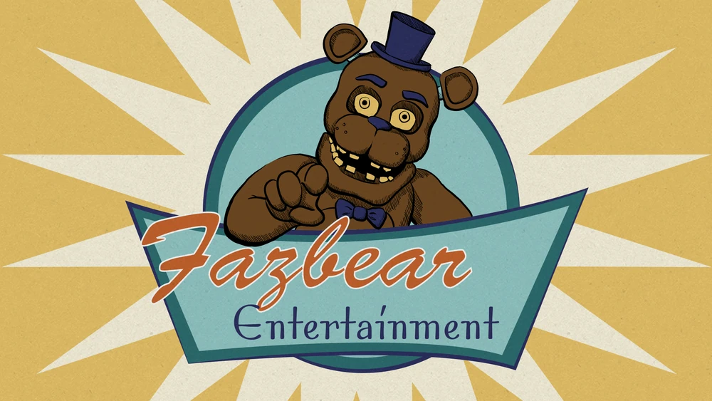
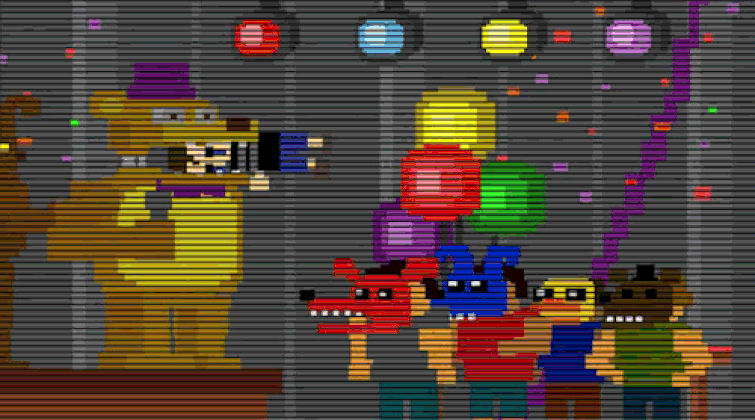
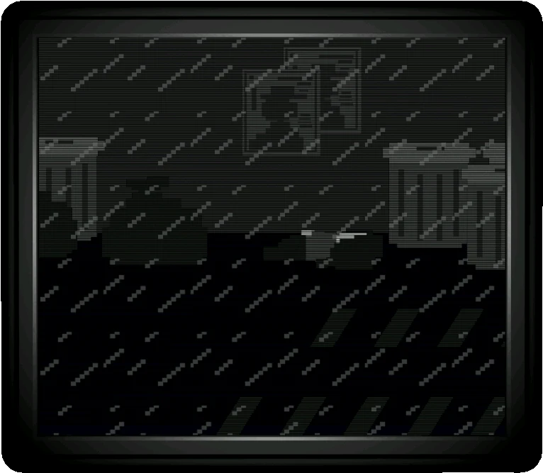
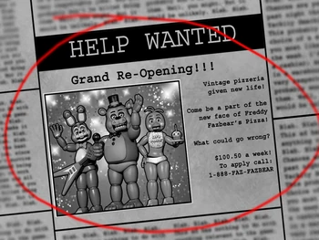
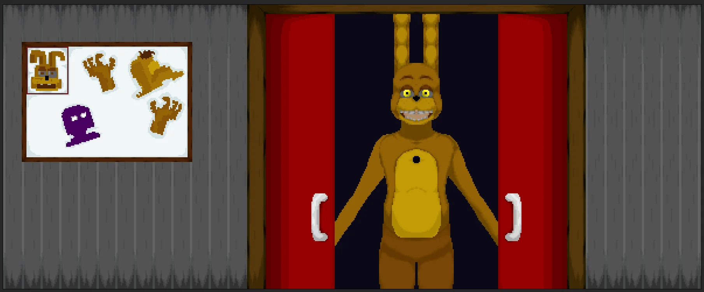
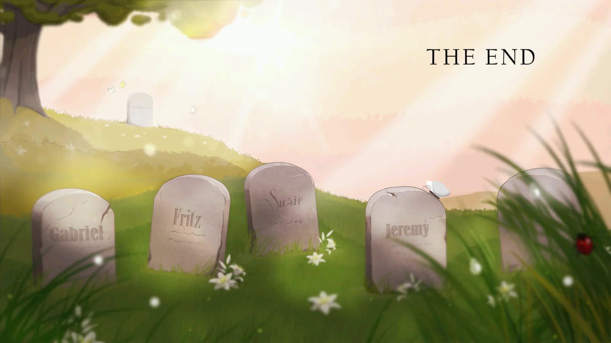
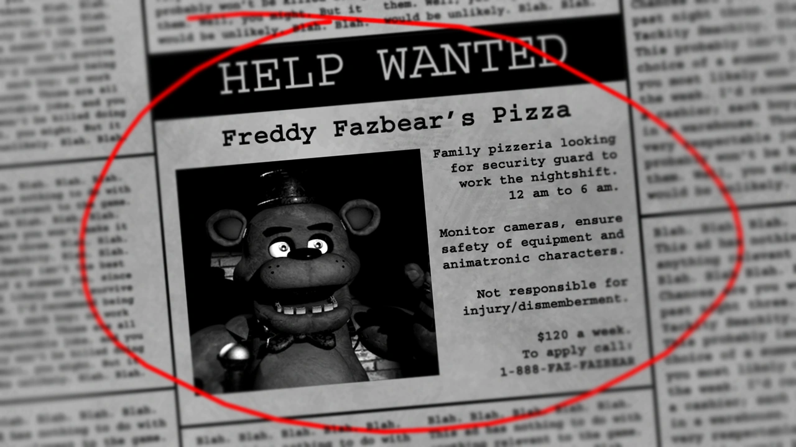
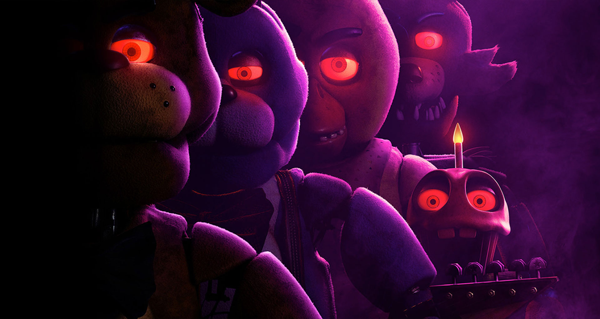
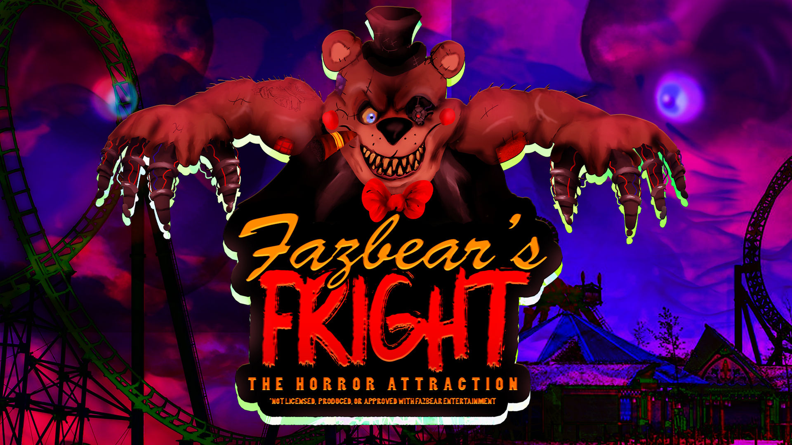
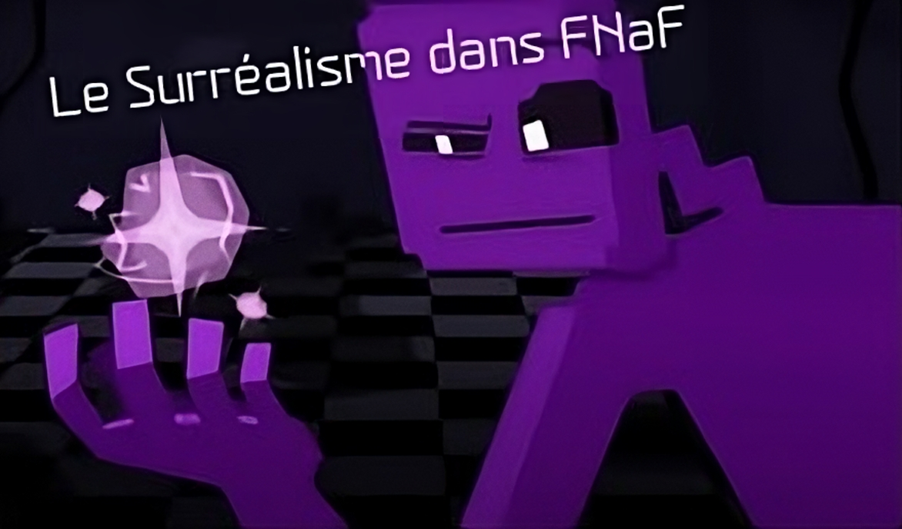

Tout commença en 1974, où deux amis, William Afton, propriétaire de Afton Robotics LLC, et Henry Emily, se collaborent pour créer une enseigne de pizzeria nommée Fazbear Entertainment
Leur première pizzeria fut nommée Fredbear's Family Diner, il ouvrit en 1974 et ferma en 1983 lors d'un accident qu'a eu l'enfant de William Afton, Evan Afton, causé par son frère Michael Afton et ses amis qu'ils l'ont mis dans la Bouche de Fredbear, ceci causa la morsure de 83

Auparavant cet accident, Purple Guy, allias William Afton, a commis un meurtre en tuant Charlotte Emily, la fille unique de Henry Emily.

Après cet accident, Fredbear's Family Diner ferma et William ouvras le Circus Baby Pizza World
Qui ne restera pas longtemps ouvert car, William, en fabriquant les robots, intégrât un mode attaque ce qui causa la mort d'Elizabeth Afton, la fille de William Afton
Quelques années après, William ouvrit encore un nouveau restaurant, le Freddy Fazbear's Pizzeria en 1987

Ce fut dans ce restaurant qu'il y a eu plusieurs meurtres, toujours causés par William Afton, vous allez me dire, comment il faisait pour pas se faire reconnaitre, et ben, c'était simples, il enfilait un des anciens costumes de l'ancien restaurant, celui de Springbonnie

Il y a en tout 5 meurtres et 1 accident, les meurtres causés par William Afton sont des meurtres d'enfants, les meurtres de Fritz, Gabriel, Susie, Jeremy et Cassidy

Ce que je ne vous ai pas dit, c'est que, à l'époque de Fredbear's Family Diner, lors du tout premier meurtre de Charlotte, un des animatroniques, Puppet, sors du restaurant, sous la pluie, et retrouve le corps encore frais de Charlotte, elle se coucha et... l'âme de Charlotte rentre dans l'animatronique, ceci fut le premier Animatronique Hantée de la franchise
Lors d'un accident en 1987 causé par l'Animatronique Mangle qui tua un garde de jour au lobe frontal, le Freddy Fazbear's Pizzeria Ferma, et réouvrit en 1992

Ce restaurant ramena les anciens Animatronques de Fredbear and Friend's, Bonnie, Chica, Freddy et Foxy

Des spéculation ce fait entendre que des odeurs de Mucus et de sang sortent des Animatronique, ceci et du que c'est dans c'est animatronique, que William Afton cacha les corps des 5 enfants disparus, ce qui ne savais pas, c'est que Puppet avais transmit les âme des enfant dans Les Animatroniquess, la police interviens et fermas le restaurant, cette fois si, cette fermeture franchit à la faillite de Freddy Fazbear's Pizzeria, et une personne ouvrit un parc d'horreur sur les horreur qui c'est passer dans cette franchise, et le nomme Fazbear's Fright: The Horror AttractionDes spéculations se fait entendre que des odeurs de Mucus et de sang sortent des Animatroniques, ceci est dû que c'est dans cet animatronique, que William Afton cacha les corps des 5 enfants disparus, ce qu'il ne savait pas, c'est que Puppet avait transmis les âmes des enfants dans Les Animatroniquess, la police intervient et ferma le restaurant, cette fois ci, cette fermeture franchit à la faillite de Freddy Fazbear's Pizzeria, et une personne ouvrit un parc d'horreurs sur les horreurs qui s'est passé dans cette franchise, et le nomme Fazbear's Fright : The Horror Attraction

L'attraction ouvrit en 2023 (l'année dernière) et lors de la 1ère nuit du gardien de nuit/comédien, rien ne se passe, jusqu'à la 2e Nuit, ou des techniciens, en allant dans les anciens restaurants, ont trouvé un Animatronique, ressemblant à Springbonnie, cette Animatronique s'appelle Springtrap, et, à chaque fin de nuit, un mini-jeu se lance où on contrôle un des 4 Animatronique dans le Freddy Fazbear's Pizzeria de 92, et on doit suivre Shadow Freddy, qui nous emmène vers les toilettes et une salle impossible d'accès et où William Afton détruisa Les Animatroniquess, à la fin de la nuit 5, on contrôle l'un de l'enfant possédant Golden Freddy, on arriva dans la salle ou Les Animatroniquess ne pouvaient pas accéder et découvrir une des salles de Sécurité, ou se cache William et un ancien costume, celui de Springbonnie
Ceci clôturera l’histoire de Five Nights at Freddy’s,… pour l’instant
